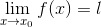
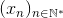
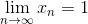

Definiție. Limite laterale
Definiția limitei unei funcții într-un punct
Fie  un interval de numere reale, o funcție reală de variabilă reală și
un interval de numere reale, o funcție reală de variabilă reală și  un punct de acumulare al mulțimii .
un punct de acumulare al mulțimii .
Un punct de acumulare al unei mulțimi este un punct care are vecini suficient de apropiați de mulțimea dată.
În secțiunea Șiruri de numere reale. Limite a ghidului Limite de șiruri s-a dat definiția vecinătății unui punct. Fie o vecinătate a punctului ( ). Atunci există puncte în care funcția
). Atunci există puncte în care funcția  este definită. (Funcția este definită în puncte apropiate de punctul .)
este definită. (Funcția este definită în puncte apropiate de punctul .)
Problema pe care o ridicăm este cea a comportării funcției în aproprierea, adică în vecinătatea unui punct (chiar dacă punctul considerat nu este în domeniul de definiție al funcției, ci este punct de acumulare pentru mulțimea în care funcția este definită). Astfel definim următoarea noțiune:
Definiția LF1: Limita funcției f
Fie funcția ,  punct de acumulare al mulțimii
punct de acumulare al mulțimii  și
și  . Numărul se numește limita funcției în punctul dacă pentru orice vecinătate există o vecinătate cu proprietatea că pentru orice , ne rezultă că .
. Numărul se numește limita funcției în punctul dacă pentru orice vecinătate există o vecinătate cu proprietatea că pentru orice , ne rezultă că .
Notație:
Limita funcției în punctul se notează astfel: .
Exemplu:
Fie funcția  , . Graficul aceste funcții este:
, . Graficul aceste funcții este:

Calculăm valoarea funcției date în diferite puncte apropiate de punctul  .
.
Observăm că, pe măsură ce  se aproprie de
se aproprie de  (ori e mai mic decât , ori e mai mare decât ), iar valorile funcției sunt cât mai aproape de
(ori e mai mic decât , ori e mai mare decât ), iar valorile funcției sunt cât mai aproape de  .
.
Înseamnă că putem afirma că .
Teorema LF2: Teorema lui Heine
Fie funcția , un punct de acumulare al mulțimii și . Atunci următoarele afirmații sunt echivalente:
- ;
- Pentru orice șir , cu
 rezultă că .
rezultă că .
Teorema lui Heine ne permite să aplicăm toate noțiunile introduse în ghidul Limite de șiruri pentru a calcula limitele unor funcții date.
Observații:
- În probleme, atunci când vrem să determinăm limita unei funcții într-un punct de acumulare a domeniului de definiție a funcției date, este suficient să cunoaștem limita unui singur șir , unde și .
- Pentru a demonstra că o funcție nu are limită într-un punct, verificăm dacă:
- există un șir , cu limita , dar șirul nu are limită.
- găsim două șiruri și
 , astfel încât șirurile și au limite diferite.
, astfel încât șirurile și au limite diferite.
Exemplu:
Vom demonstra, utilizând Teorema LF2: Teorema lui Heine, că funcția următoare nu are limită în punctul indicat.
Fie funcția , . Să se determine dacă funcția dată are limită în punctul de acumulare al domeniului funcției  .
.
Rezolvare:
Căutăm două șiruri  și cu și , .
Fie  . Introducem șirurile:
. Introducem șirurile:
,  :
:
, .
Avem că:
Calculăm și  .
.
Calculăm și .
Deci .
Menționăm faptul că operațiile cu limite de șiruri de mai sus s-au efectuat conform noțiunilor prezentate în ghidul Limite de șiruri, la secțiunea Operații cu limite de șiruri.
Conform teoremei lui Heine, avem că funcția dată nu are limită în punctul .
Limite laterale
Definiția LF3: Limită la stânga și limită la dreapta
- Fie , un punct de acumulare al mulțimii . Funcția are limită la stânga (notată ) în punctul , dacă pentru orice șir cu , , rezultă că există .
- Fie , un punct de acumulare al mulțimii x_0 \right \}">. Funcția are limită la dreapta (notată ) în punctul , dacă pentru orice șir cu , , rezultă că există .
- Limitele la stânga și la dreapta ale funcției în punctul se numesc limite laterale ale funcției în .
Notații:
- limita la stânga: sau .
- limita la dreapta: x_0}}f(x)"> sau .
Exemplu:
Fie funcția ,  . Să se calculeze limitele la stânga și la dreapta în punctul .
. Să se calculeze limitele la stânga și la dreapta în punctul .
Rezolvare:
Vrem să calculăm .
Fie . Considerăm șirurile:
, :
, .
Dacă , atunci 0"> și 0">, 0">.
Deci și .
Calculăm și .
Calculăm  și .
și .
Avem că:
Deci .
Menționăm faptul că operațiile de mai sus s-au putut efectua datorită proprietăților și formulelor trigonometrice asociate funcției sinus (imparitatea funcției).
Conform teoremei lui Heine rezultă că nu există .
Deci funcția nu are limită la stânga în punctul .
Limita la dreapta a funcției date în punctul este:
0}}f(x)=\lim_{\substack{x\to 0 \\ x< 0}} x\Leftrightarrow \\\\ &\Leftrightarrow \lim_{\substack{x\to 0 \\ x> 0}}f(x)=0 \end{align*}">
Teorema LF4:
Funcția are limită în punctul de acumulare al mulțimii dacă există limitele laterale în punctul și acestea sunt egale.
Adică:
x_0}}f(x)">.
Exemplu:
Să se determine dacă funcția , 1 \end{cases}"> în punctul .
Rezolvare:
Fie șirul , , astfel încât .
Calculăm .
Fie șirul , 1, n\in\mathbb{N}^*">, astfel încât .
Calculăm .

Deci avem:
1}}f(x)&=\lim_{\substack{x\to 1 \\ x> 1}}x\\&=1 \end{align*}">
Rezultă că 1}}f(x) \end{align*}">.
Deci există .